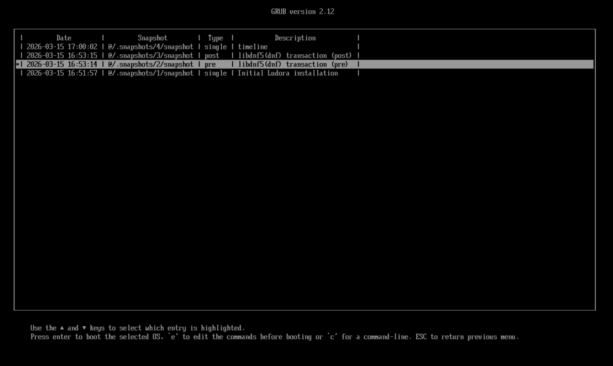
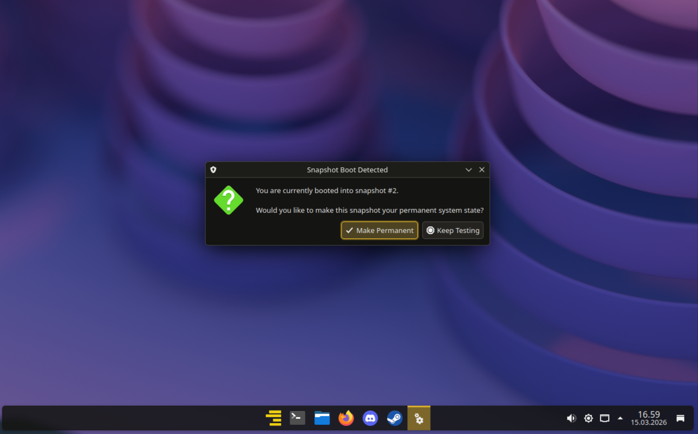
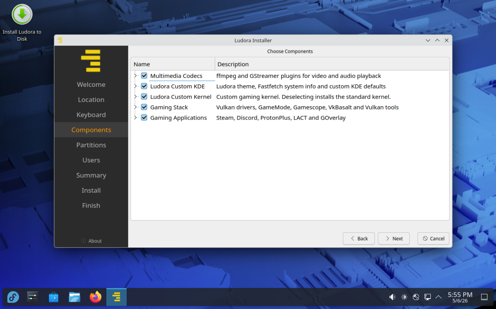
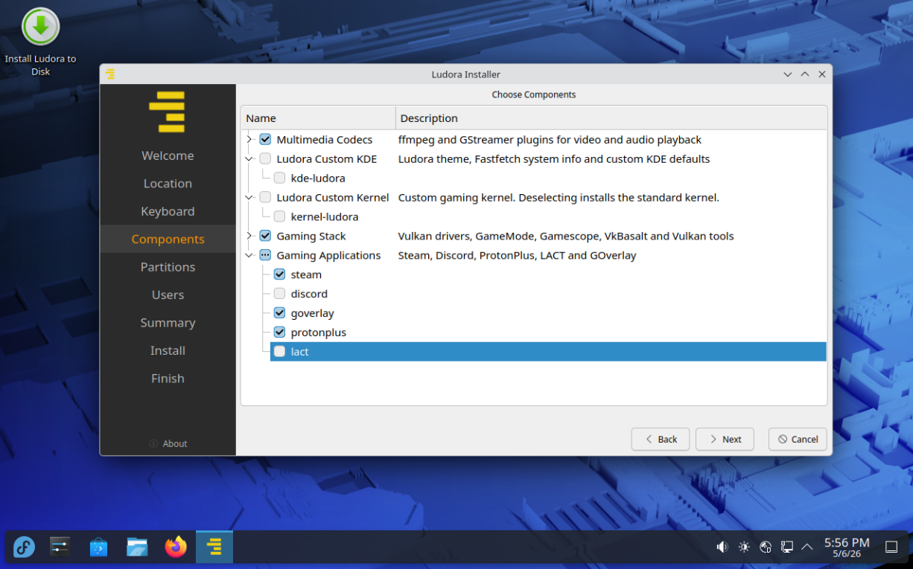
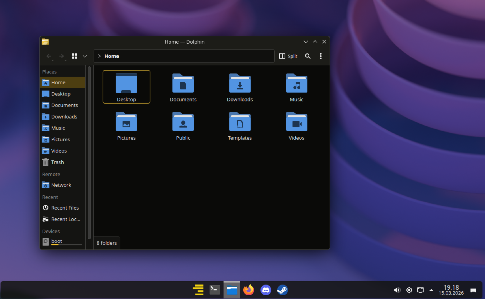

Fedora with openSUSE-style bootable snapshots — not just for gamers
Full gaming setup out of the box, or strip it down to a clean KDE desktop with automatic rollback.
You choose what gets installed. Setting up bootable snapshots on Fedora manually takes hours — Ludora does it automatically.
See how it works →
Ludora automatically creates bootable Btrfs snapshots before and after every system update.
If something breaks, just reboot, select a snapshot from GRUB, and restore your system to a working state.

1. Select snapshot from GRUB
All snapshots appear in your boot menu. Choose any previous state of your system.

2. One-click restore
A popup asks if you want to restore from this snapshot. Click yes, reboot, and you're back to a working system.
Automatic snapshots
Snapshots are created automatically before and after DNF package operations. No manual intervention needed.
Bootable from GRUB
openSUSE-style integration with GRUB means every snapshot is bootable. No live USB needed for recovery.
Hard to break
Test new kernels, drivers, or updates with confidence. You're always one reboot away from a working system.
Why this matters
Setting up bootable Btrfs snapshots on Fedora manually is surprisingly complicated. The default Anaconda installer doesn't support
the subvolume layout needed, so it requires manual post-install configuration before installing and setting up snapper, grub-btrfs, and DNF plugins.
Ludora handles all of this automatically during installation using a custom Calamares configuration. You get openSUSE-style
snapshot protection on Fedora's stable base, with zero manual setup required.
Modular Installer
Your install. Your way.
All five component groups are pre-selected for a full gaming setup. Deselect any of them during installation — Ludora installs exactly what you choose.

Full gaming setup. All five components selected — the default. Install and you're ready to game immediately.

Pick and choose. Deselect the gaming components you don't want. Each group is independent.
Multimedia Codecson by default
ffmpeg and GStreamer plugins for video and audio playback
Ludora Custom KDEon by default
Ludora theme, Fastfetch system info, and custom KDE defaults
Ludora Custom Kernelon by default
Gaming kernel with BORE scheduler and CachyOS performance patches. Deselect to use the standard Fedora kernel.
Gaming Stackon by default
Vulkan drivers, GameMode, Gamescope, VkBasalt, and Vulkan tools
Gaming Applicationson by default
Steam, Discord, ProtonPlus, LACT, and GOverlay
Not a gamer?
Deselect the Gaming Stack and Gaming Applications during installation and you get a clean Fedora 44 KDE desktop with bootable snapshots and multimedia codecs — no Steam, no gaming tools, just a stable base that's hard to break.
BORE Scheduler
CachyOS Patches
Btrfs Snapshots
Auto Rollback
Modular Installer
Steam
Proton-GE
MangoHud
VA-API
Vulkan
KDE Plasma
Pick Your Stack
BORE Scheduler
CachyOS Patches
Btrfs Snapshots
Auto Rollback
Modular Installer
Steam
Proton-GE
MangoHud
VA-API
Vulkan
KDE Plasma
Pick Your Stack
What's included
Built for gaming. Works for everyone.
Everything a modern gaming system needs — or just the parts you want. Built on the stability and security of Fedora.
Custom Kernel with BORE
Optimized for low-latency gaming with BORE scheduler and CachyOS performance patches. Responsive under load, smooth frame delivery.
Bootable Btrfs Snapshots
openSUSE-style automatic snapshots before and after every system update. Boot into any previous state directly from GRUB. One-click rollback script included.
Gaming Ready Out of Box
Steam, Proton-GE, MangoHud, and full codec support pre-installed. Launch Steam, download your library, play. No driver hunts.
Refined KDE Desktop
Custom Ludora theme with clean aesthetics and gaming-focused defaults. Fast, familiar, and stays out of your way.
Fedora Stability
Built on Fedora 44 stable base. Proven package ecosystem, robust SELinux security, and predictable six-month release cycle.
Active COPR Repository
All custom packages built and maintained in public COPR. Transparent build logs, automatic updates, reproducible from source.
Modular Installation
Five independent component groups. Install the full gaming setup or strip it down to a clean KDE desktop with snapshots. You decide at install time.
See it in action
Snapshots and desktop.
A look at the snapshot boot menu and the default desktop environment.

Clean KDE Plasma desktop. Custom Ludora theme with amber accents. Fastfetch pre-configured to show system specs. Steam, Discord, and gaming tools pinned and ready.
Bootable snapshots in GRUB. Every system update creates a pre/post snapshot pair. Boot into any previous state if an update breaks something. No manual configuration required.
One-click snapshot restore. The system detects when booted into a snapshot. Restore is only a single click away.
Transparency
What this actually is.
No marketing fluff. Just the facts.
Status
Ludora 44.3 is available now. Automatic snapshots work, the custom kernel is stable, and gaming works out of the box.
This is a personal project, not a commercial product.
Target audience
Anyone comfortable with Fedora or Linux in general who wants automatic rollback built in.
That includes gamers who want a ready-to-go gaming system, and non-gamers who just want a
stable KDE desktop that's hard to break.
The name
Ludo is Latin for "I am playing." The second half nods to Fedora,
the distribution it's built on. Simple etymology.
Source & builds
All source is on GitHub.
All packages build in COPR.
Nothing hidden.
Get started
Download and install.
ISO hosted on SourceForge. Write to USB with Fedora Media Writer or Balena Etcher. Boot and install.